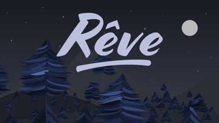
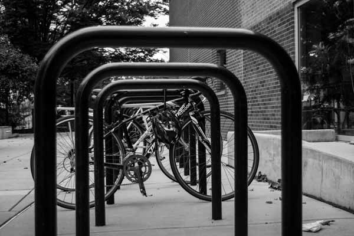

My Work
Le Rêve
Animation exploring the dynamic and emotional responses to colors. View Project
Photography
An ongoing and growing collection of my creative photography. View Project
Animation exploring the dynamic and emotional responses to colors. View Project
An ongoing and growing collection of my creative photography. View Project